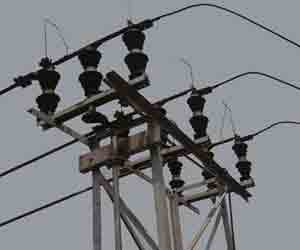
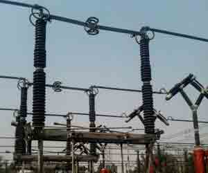

Types of Electrical Isolators
Constructional Features of Double Break Isolators
Constructional features of Single Break Isolators
Earthing Switches
Operation of Electrical Isolator
Definition of Isolator
Circuit breaker always trip the circuit but open contacts of breaker cannot be visible physically from outside of the breaker and that is why it is recommended not to touch any electrical circuit just by switching off the circuit breaker. So for better safety there must be some arrangement so that one can see open condition of the section of the circuit before touching it. Isolator is a mechanical switch which isolates a part of circuit from system as when required. Electrical isolators separate a part of the system from rest for safe maintenance works.
So definition of isolator can be rewritten as Isolator is a manually operated mechanical switch which separates a part of the electrical power system normally at off load condition.
Types of Electrical Isolators
There are different types of isolators available depending upon system requirement such as
1) Double Break Isolator
2) Single Break Isolator
3) Pantograph type Isolator.
Depending upon the position in power system, the isolators can be categorized as
1) Bus side isolator – the isolator is directly connected with main bus
2) Line side isolator – the isolator is situated at line side of any feeder
3) Transfer bus side isolator – the isolator is directly connected with transfer bus.
Constructional Features of Double Break Isolators
Lets have a discussion on constructional features of Double Break Isolators. These have three stacks of post insulators as shown in the figure. The central post insulator carries a tubular or flat male contact which can be rotated horizontally with rotation of central post insulator. This rod type contact is also called moving contact.

The female type contacts are fixed on the top of the other post insulators which fitted at both sides of the central post insulator. The female contacts are generally in the form of spring loaded figure contacts. The rotational movement of male contact causes to come itself into female contacts and isolators becomes closed. The rotation of male contact in opposite direction make to it out from female contacts and isolators becomes open.
Rotation of the central post insulator is done by a driving lever mechanism at the base of the post insulator and it connected to operating handle (in case of hand operation) or motor (in case of motorized operation) of the isolator through a mechanical tie rod.

Constructional features of Single Break Isolators
The contact arm is divided into two parts one carries male contact and other female contact. The contact arm moves due to rotation of the post insulator upon which the contact arms are fitted. Rotation of both post insulators stacks in opposite to each other causes to close the isolator by closing the contact arm. Counter rotation of both post insulators stacks open the contact arm and isolator becomes in off condition. This motorized form of this type of isolators is generally used but emergency hand driven mechanism is also provided.
Earthing Switches
Earthing switches are mounted on the base of mainly line side isolator. Earthing switches are normally vertically break switches. Earthing arms (contact arm of earthing switch) are normally aligned horizontally at off condition. during switching on operation, these earthing arms rotate and move to vertical position and make contact with earth female contacts fitted at the top of the post insulator stack of isolator at its outgoing side. The erarthing arms are so interlocked with main isolator moving contacts that it can be closed only when the main contacts of isolator are in open position. Similarly the main isolator contacts can be closed only when the earthing arms are in open position.
Operation of Electrical Isolator
As no arc quenching technique is provided in isolator it must be operated when there is no chance electric current flowing through the circuit. No live circuit should be closed or open by isolator operation. A complete live closed circuit must not be opened by isolator operation and also a live circuit must not be closed and completed by isolator operation to avoid huge arcing in between isolator contacts. That is why isolators must be open after circuit breaker is open and these must be closed before circuit breaker is closed. Isolator can be operated by hand locally as well as by motorized mechanism from remote position. Motorized operation arrangement costs more compared to hand operation; hence decision must be taken before choosing an isolator for system whether hand operated or motor operated economically optimum for the system. For voltages up to 145KV system hand operated isolators are used whereas for higher voltage systems like 245 KV or 420 KV and above motorized isolators are used.
\ by
by